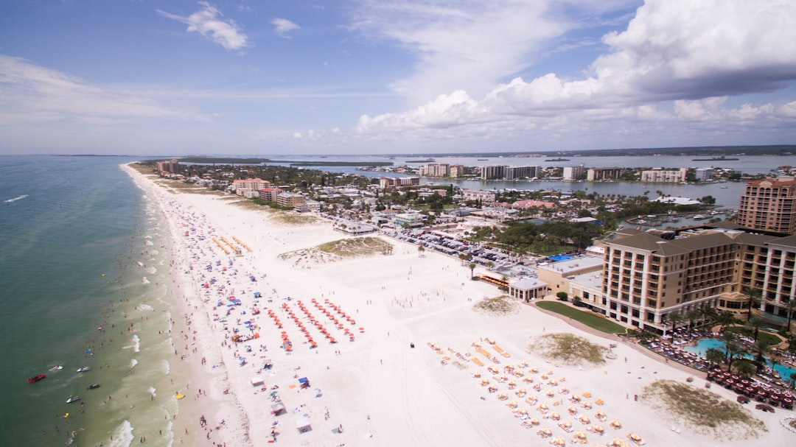

For Tampa homeowners, the useful starting point is a real roof inspection, a written itemised estimate, and a licence check before work begins. The supplied source says quotes should separate material, tear-off, decking, permit and warranty, and that replacement cost varies with roof size, pitch, material, and any code or decking work. It also says residential roof covering replacement in Tampa generally requires a building permit and follow-up inspections.
For homeowners comparing roofing contractors tampa after a leak, storm damage, or an ageing roof, the practical task is to verify the licence, get a real inspection, and judge the written scope against what the roof actually needs.
Roofing Contractors Tampa Explained
Roofing Contractors Tampa frames the first decision clearly, repair or replacement should follow a real inspection, not a driveway guess. That matters when a fresh leak, recent storm damage, and an older roof can all present as urgent from inside the house but lead to different work once the roof is inspected properly.
The source page also points to the local pressures roofs face here, heat, UV, afternoon storms, and hurricane-season wind. Those conditions help explain why surface symptoms are not enough on their own. A stain on a ceiling may come from one failed area, while repeated leaks can suggest a roof that has moved beyond isolated repair.
Ask the inspector to identify where water is entering, which roof section is involved, and whether the problem looks localised or repeated. Those points give you a sound basis for judging whether a smaller repair is still realistic or whether a full reroof should be priced in detail.
Use the quote to compare like with like
The source page says a fair estimate is itemised after inspection, with material, tear-off, decking, permit, and warranty listed separately. That structure is more useful than a single total because it shows whether two contractors are pricing the same work or hiding differences inside one number.
It also says replacement cost varies with roof size, pitch, material, and whether code upgrades or decking repairs are required. So if one written estimate is higher, the useful question is not simply why it costs more. The better question is what extra scope has been included, and whether the other quote has omitted it.
If both repair and replacement remain possible, ask for each path in writing. A repair figure should identify the section being repaired and why wider work is not being proposed now. A replacement figure should show the full scope clearly enough that you can compare it against another itemised estimate.
Match the roof system to the section being priced
The supplied page names several roof types and materials, architectural shingles, barrel tile, standing-seam metal, and membrane systems over low-slope sections. It also lists services for shingle, metal, tile, flat and low-slope roofing, plus inspections for storm damage, insurance claims, and remaining useful life. That mix is useful because it shows the inspection should deal with the roof in front of the contractor, not a standard script.
For low-slope areas, the page refers to TPO and modified bitumen. For tile roofs, it mentions code-compliant underlayment. For metal roofs, it points to Florida wind and salt exposure. Those are different scope questions, so the written estimate should make clear which roof section is being discussed and what system is proposed there.
If the home has more than one roof form, ask whether each section has been assessed on its own terms. You may find one area is suited to repair while another is approaching replacement. For leak-specific issues, this guide to roof repairs tampa is the closest companion read.
Handle licence, permit and insurer paperwork early
The strongest consumer check on the source page is licence verification at MyFloridaLicense.com before work begins. That step belongs near the start, before approval or deposit, because it lets you confirm the contractor behind the written scope is properly licensed.
The same page says Tampa roofs must meet Florida Building Code high-wind requirements, and that residential roof covering replacement in Tampa generally requires a building permit and later inspections. It adds that most homeowners have the contractor pull the permit and should confirm that responsibility in writing before work starts. That written confirmation matters because permit responsibility is part of the scope, not a side detail.
After a storm, the page says a proper inspection records damage in photos and writing for the insurer. It also says a wind mitigation inspection can qualify a homeowner for a premium discount, while making clear that the roofer documents the roof and the insurer decides the outcome.
Who this guide helps, and what to prepare before quotes
This guidance fits homeowners dealing with a fresh leak, visible storm damage, or an ageing roof that now needs a plan. Those are the main reasons the supplied page gives for seeking help. It is also useful when you are deciding whether to spend on a targeted repair now or gather proper replacement pricing before repeated issues become more costly.
Before asking for numbers, prepare the same information for each contractor. Note when the problem first appeared, whether it followed a storm, whether the issue is confined to one area, and whether leaks have returned more than once. Consistent inputs make written comparisons easier because each estimate starts from the same account of the problem.
- Ask for a real inspection before any repair or replacement recommendation.
- Request the estimate in writing with material, tear-off, decking, permit, and warranty shown separately.
- Confirm who is pulling the permit if replacement is proposed.
- Check the licence yourself before approving work.
If a contractor cannot explain the scope in those terms, the quote is not yet ready to compare.
- Describe the problem. State whether the trigger is a fresh leak, storm damage, or an ageing roof that now needs a plan.
- Book inspection. Arrange a real roof inspection before accepting any recommendation to repair or replace.
- Request line items. Ask for the estimate in writing with material, tear-off, decking, permit, and warranty separated.
- Confirm paperwork. Verify the licence yourself and confirm in writing who will pull the permit if replacement is proposed.
| Question | Repair path | Replacement path |
|---|---|---|
| What supports the recommendation | Damage is localised and the roof is otherwise sound | Leaks keep returning or the roof has aged out |
| What the written scope should show | The section being repaired and why broader work is not proposed now | Itemised estimate covering material, tear-off, decking, permit and warranty |
| What to confirm before approval | Licence check and storm documentation if relevant | Licence check, permit responsibility, and code-compliant scope |
Common questions
Do I always need full replacement after storm damage? No. The supplied page says a targeted repair can be the smarter spend when damage is localised and the roof is otherwise sound. It says replacement becomes more likely when leaks keep returning or the roof has aged out.
What should a roofing estimate include? The source page says the estimate should be itemised after inspection, with material, tear-off, decking, permit, and warranty set out clearly. That format helps homeowners compare written scope on the same basis.
Does roof covering replacement in Tampa usually need a permit? The supplied page says residential roof covering replacement in Tampa generally requires a building permit and subsequent inspections for code compliance. It also says most homeowners have the contractor pull the permit and should confirm that in writing.
How can I check whether a roofer is licensed? The page says you can verify any licence yourself at MyFloridaLicense.com before work begins. That check should happen before approving the work.
This guide covers inspection evidence, quote structure, permit checks, and the repair or replacement decisions homeowners need to make.